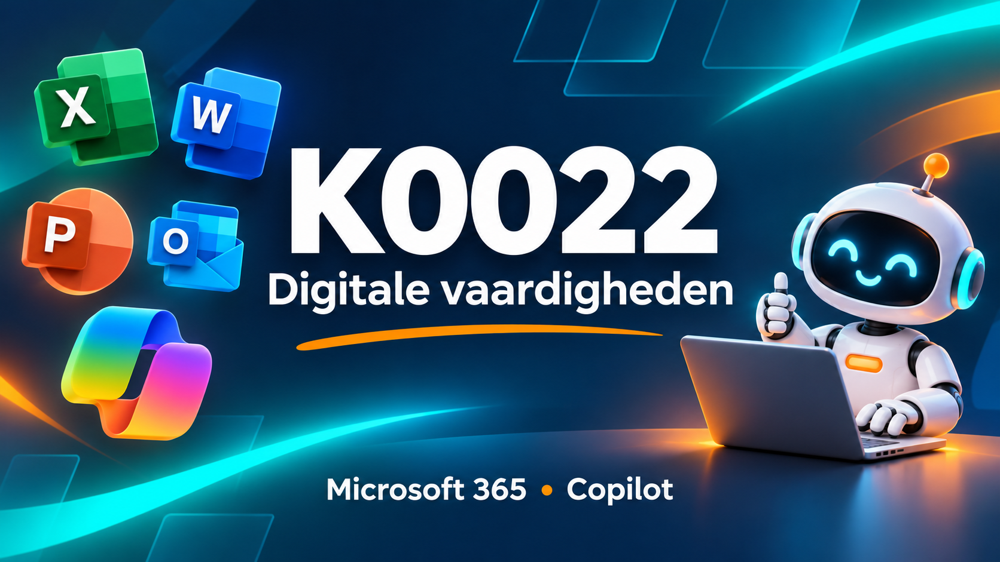
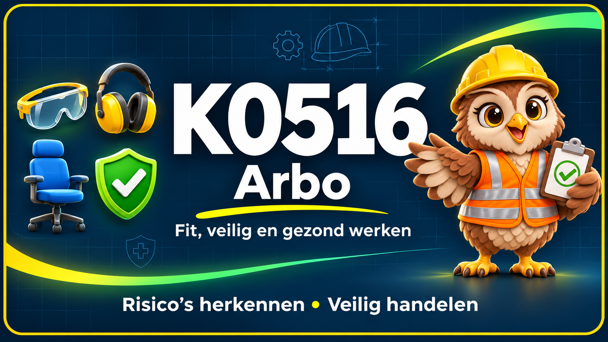
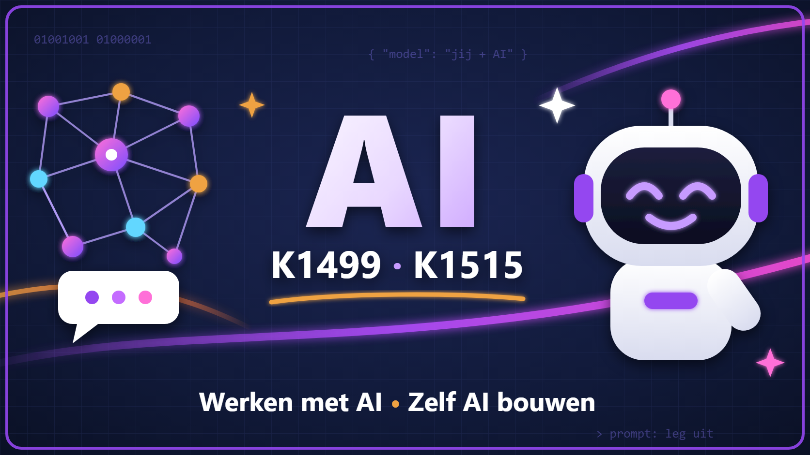

K0022 · Digitale vaardighedenKeuzedelen
Future in the making
 K0877 · Praktisch zelfstandig wonen
K0877 · Praktisch zelfstandig wonen

K0516 · Arbo
K1499 & K1515 · AI
K0022 · Digitale vaardigheden
K0877 · Praktisch zelfstandig wonen

K0516 · Arbo
K1499 & K1515 · AI